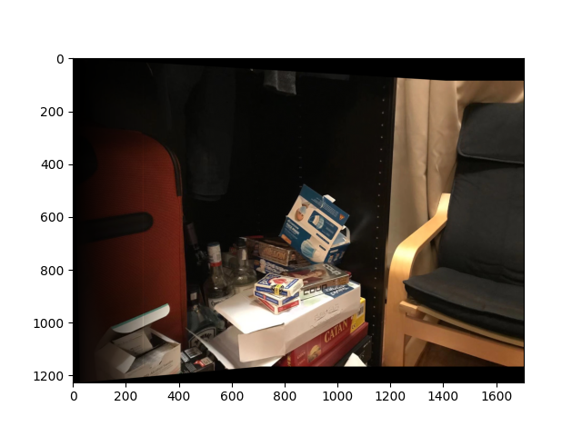

Panorama Stitching
CS194-26 Proj #5 : Stitching Photo Mosaics, Ken Guan
In project 5, we will implement an algorithm to stitch-up continuous images. As the first part, we try to warp photos taken at different angles on to the same plane.
For this assignment, I picked the boardgame corner of my living room, which has lots of distinct sharp corners that are great for marking pairs. I labeled the images with 16 corresponding points. Here are the labeled images:
I labeled the images with 16 corresponding points. Here are the labeled images:
I then recovered the least-square homography from image 2 and 3 to image 1.
I warped image 2 and 3 to image 1 using inverse warping. Both images are warped into the set of coordinates that would overlap with image 1 well.
Left: target image; middle & right: warped image 2, 3
I tested the warp function by rectifying the blue poker case into a fat square at the top left corner. Here is what I got:
Another example of rectification:
I did not worry much about cropping or expanding the edges here because I'm very excited for the next part!
If we warp all images on to the same plane and naively stack them, we get something like:

Note how the overlapping parts have much higher brightness. To mitigate this, I tried to take the maximum value at each spot insteading of adding them up:

It's easy to notice that color and brightness still changes a bit at the edge of overlap. Also my finger was caught at the edge of the middle image and made a ghost apparence right at the overlap! We have to erase these effects. I used a mask that falls off gradually toward one side.

Now the edge effects are all eliminated! Yay!
A few other blends:


Looks like I forgot to turn off the fade off towards the left. Oof. But these images do show that the morphs and blending are working (except for the light beam on the street images. I don't have a good explanation to this especially given everything else on the image works very well.)
Now we switch over to automatically detecting features from the images. This approach should work better because hand-marked features are far more prone to errors. I used ANMS on the Harris corners to find the top 500 features for each image.
We then define a "descriptor" for each point by extracting a blurred patch around each point. We match points by these descriptors. Specifically, we accept matches such that the error of the best match is significantly lower than that of the second best match.
There is one point on the black cloth on the chair that isn't a great match. From this point, I first tried using these points directly to form a mosaic. I then used the RANSAC algorithm to select the "best" set of matches to use. Here are the results:

Left: Homography without RANSAC. Right Homography with RANSAC.
Compare these images side by side and we realize that RANSAC does give the more robust result. Now let's compare the RANSAC results against the hand-marked stitch results for the other two images:
We can see that the image qualities are very close, but the automatically detected key points do slightly better on the street image.
I actually find the correspondence between image data and np matrices very interesting. It has been intimidating to work with image data but you could display them for debugging with matlibplot very easily. While working with masks and filters, you could also easy construct them from scratch in np array form. I have also gained lots of experience with some np features in this project. (For example, I haven't seen np._r until Google told me that it was exactly what I needed!)
It also became obvious to me how manual operations are highly prone to error. Each hand-marked mosaic took me at least 5 attempts of marking the feature points before getting a reasonable blend!